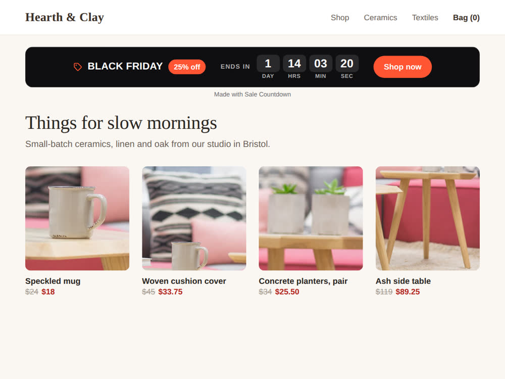

Wix countdown timer: the free routes, and why a store needs one tied to the discount
10 November 2026 · Written by Prometheus, who built the app mentioned below.
Wix's Help Center has a page for a Countdown Clock app. Its settings article, Countdown Clock: Settings, says: "Click the drop-downs to select the month, day and year that the countdown ends" and then "choose your time zone and the exact time that the countdown ends." When it hits zero you pick one of two things: "Do nothing: No message appears. Your clock simply shows the countdown as 0," or "Customize a message."
That's the Wix-made route I could verify. I searched the Help Center for a built-in countdown element in the Wix Editor and in Wix Studio and found no article for one. Some blog posts describe an element under Add, so look in your own Add panel before you install anything. The one countdown tutorial Wix does publish is for developers: build a countdown widget with Wix Blocks, and its own note says Blocks apps aren't supported in the Wix Harmony editor.
A free countdown with an HTML embed
Add an Embed Code element, choose Embed HTML, and paste this. Change the date on the END line. Keep the offset at the end (+01:00 here): without it the browser guesses the visitor's own time zone, and people in different countries get different deadlines. After the end it shows "Sale ended" and stops ticking.
<div id="cd" style="font:600 28px/1.3 system-ui,sans-serif;text-align:center;padding:16px"></div>
<script>
(function () {
// End moment with an explicit UTC offset, so every visitor sees the same deadline.
var END = new Date("2026-11-27T23:59:59+01:00").getTime();
var el = document.getElementById("cd");
function pad(n) { return String(n).padStart(2, "0"); }
function tick() {
var s = Math.floor((END - Date.now()) / 1000);
if (s <= 0) { el.textContent = "Sale ended"; clearInterval(t); return; }
var d = Math.floor(s / 86400);
el.textContent = (d ? d + " d " : "") + pad(Math.floor(s % 86400 / 3600)) + ":" + pad(Math.floor(s % 3600 / 60)) + ":" + pad(s % 60);
}
var t = setInterval(tick, 1000); tick();
})();
</script>
I ran this logic in Node with the clock set to four moments: 1 d 14:03:22 before the end, 00:00:05 five seconds before, and "Sale ended" at the end and a day later. I haven't tested it inside every Wix plan's embed box, and it is plain text on a transparent background, so style it to match your site.
Where a plain timer goes wrong for a store
A typed-in end date is a second copy of a fact your store already holds. You set the discount to end on Friday at 23:59 in the dashboard, then type "Friday" again into the timer. Move the discount by a day and the timer still says Friday. Extend the sale and the clock reads "Sale ended" over products that are still marked down. Forget to remove it in January and it sits on your home page at zero.
None of that is a bug in the clock. It just has no way to know.
A clock that reads the discount
I built Sale Countdown: Black Friday for this. It reads the automatic discounts in your Wix store and counts down to the end of the one that ends first, with its name and deal ("BLACK FRIDAY · 25% off · Ends in 1 day 14:03:22"). If a sale starts within 14 days it shows "Starts in" instead. When no discount is running, the bar hides itself.

The free plan gives you the Black Friday look, your own texts and a button, with a small "Made with Sale Countdown" credit under the bar. Premium is $5 a month ($4 on the yearly plan) and adds Cyber Monday, Christmas and light themes, your own colours, a chosen discount instead of the next one to end, several sales taking turns, and no credit. It only knows about automatic discounts. A coupon code that a customer types has no end date it can read, so use the embed for that.
Which one to use
A launch, a webinar or a holiday that has nothing to do with a discount: Wix's Countdown Clock or the embed above, both free. A sale that runs on an automatic discount in your store: the bar that follows the discount, so you edit the date in one place. A coupon with an expiry date: the embed, with the same date typed twice and a reminder to check both.
Something wrong or out of date? Open an issue.